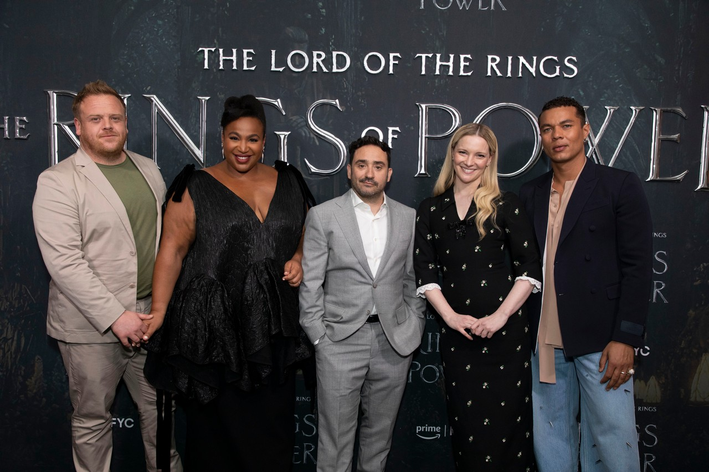
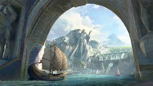
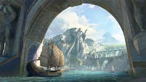
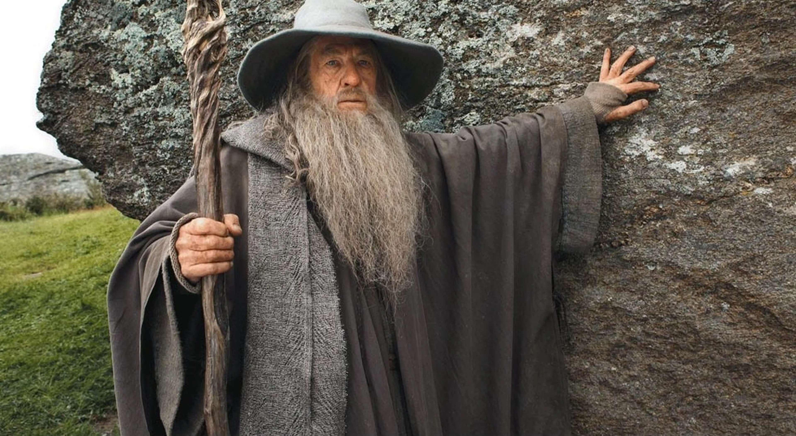
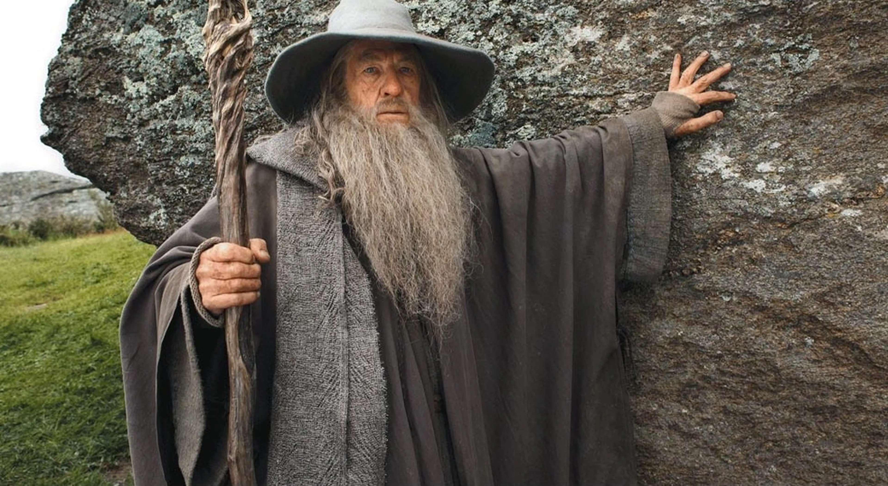
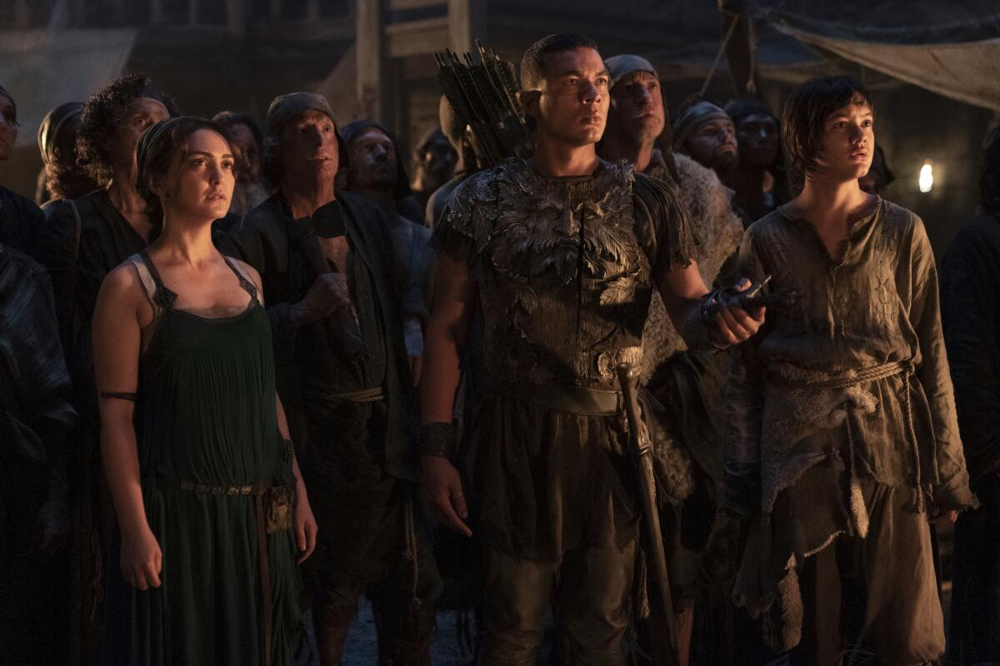
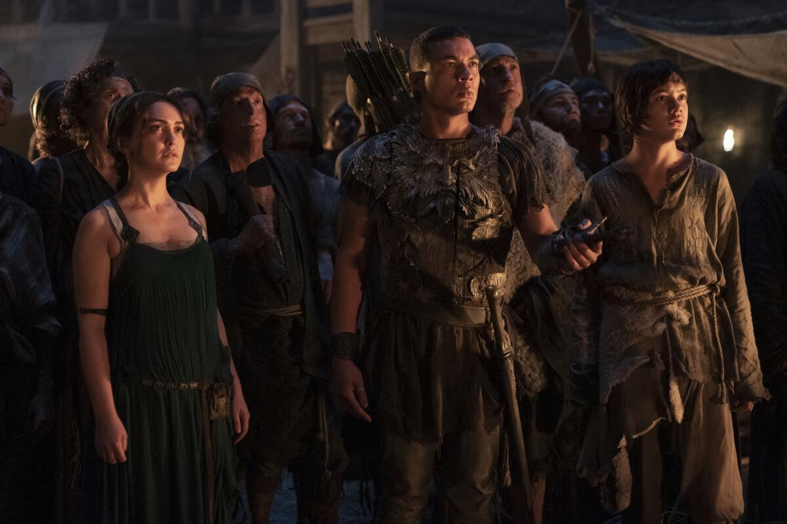
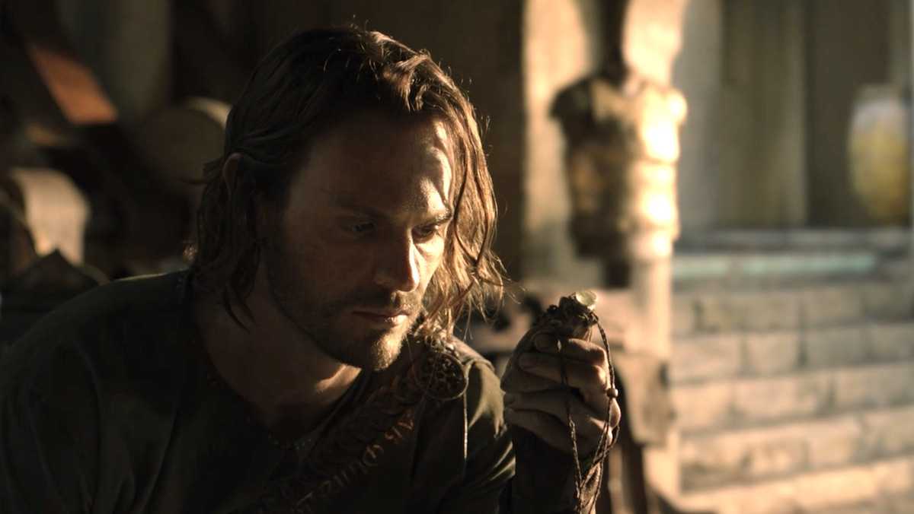
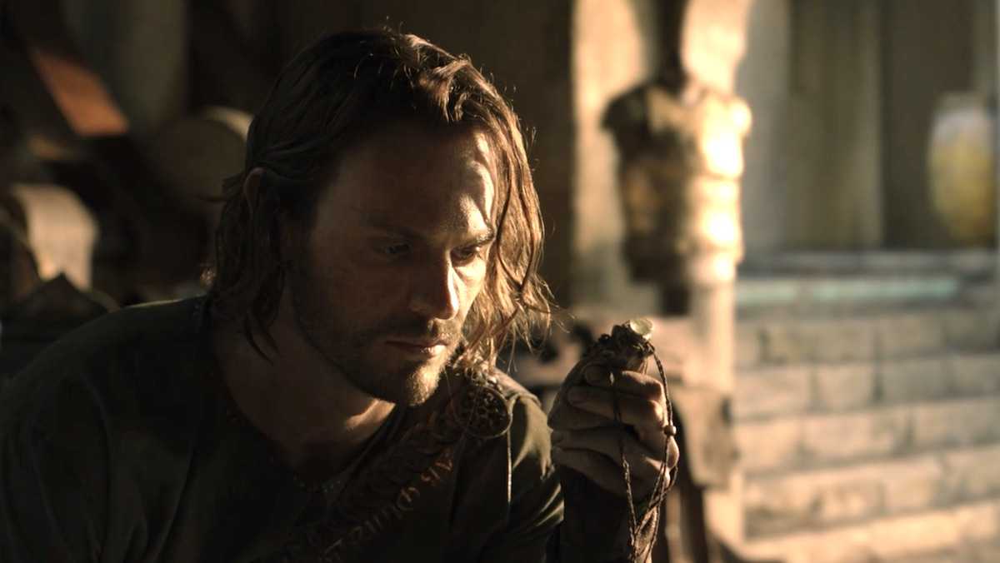

Eventos y nominaciones

Desde su estreno, la serie ha estado presente en diferentes premiaciones y
festivales:
Saturn Awards 2023
Nominación: Mejor serie de streaming.
Nominación: Mejores efectos visuales.
Hollywood Critics Association Awards
Nominación: Mejor producción de género.
Emmy Awards
Nominación: Mejores efectos visuales en serie.
Nominación: Mejor diseño de producción.
Nominación: Música original por Bear McCreary.
Premios BAFTA TV Craft
Reconocimiento a logros técnicos en producción.
La serie también tuvo eventos especiales en premieres de Los Ángeles, Londres y Nueva Zelanda, donde
se destacó la escala global del proyecto.
Curiosidades
 La serie más cara de la historia: solo la primera temporada costó alrededor de 465 millones de
dólares, sin contar los 250 millones que Amazon pagó a los herederos de Tolkien por los
derechos.

Númenor en su esplendor: la serie es la primera adaptación que muestra la isla-continente de
Númenor en su apogeo, un lugar solo mencionado en las películas.
La serie más cara de la historia: solo la primera temporada costó alrededor de 465 millones de
dólares, sin contar los 250 millones que Amazon pagó a los herederos de Tolkien por los
derechos.

Númenor en su esplendor: la serie es la primera adaptación que muestra la isla-continente de
Númenor en su apogeo, un lugar solo mencionado en las películas.
 El cameo secreto de Peter Jackson nunca ocurrió: aunque se especuló que el director de las
trilogías aparecería, Jackson declaró que nunca fue contactado oficialmente por Amazon.

Inspirada en apéndices: la serie no adapta directamente El Silmarillion (cuyos derechos no tiene),
sino que se basa en los apéndices de El Señor de los Anillos, ampliando y reinterpretando esos
textos.
El cameo secreto de Peter Jackson nunca ocurrió: aunque se especuló que el director de las
trilogías aparecería, Jackson declaró que nunca fue contactado oficialmente por Amazon.

Inspirada en apéndices: la serie no adapta directamente El Silmarillion (cuyos derechos no tiene),
sino que se basa en los apéndices de El Señor de los Anillos, ampliando y reinterpretando esos
textos.
 Howard Shore volvió: el compositor de la música de El Señor de los Anillos compuso el tema
principal de la serie, mientras que Bear McCreary se encargó del resto de la banda sonora.

Diversidad en la Tierra Media: fue la primera vez que Amazon incluyó un elenco diverso en la
representación de elfos, enanos y hombres, generando debates en la comunidad tolkieniana.
Howard Shore volvió: el compositor de la música de El Señor de los Anillos compuso el tema
principal de la serie, mientras que Bear McCreary se encargó del resto de la banda sonora.

Diversidad en la Tierra Media: fue la primera vez que Amazon incluyó un elenco diverso en la
representación de elfos, enanos y hombres, generando debates en la comunidad tolkieniana.
 Galadriel joven: esta es la primera vez que se explora en pantalla la historia de Galadriel en su
juventud, mostrando su lado guerrero y aventurero.

El personaje de Halbrand: fue creado especialmente para la serie, aunque su arco narrativo se
conecta con mitos centrales de Tolkien.
Galadriel joven: esta es la primera vez que se explora en pantalla la historia de Galadriel en su
juventud, mostrando su lado guerrero y aventurero.

El personaje de Halbrand: fue creado especialmente para la serie, aunque su arco narrativo se
conecta con mitos centrales de Tolkien.